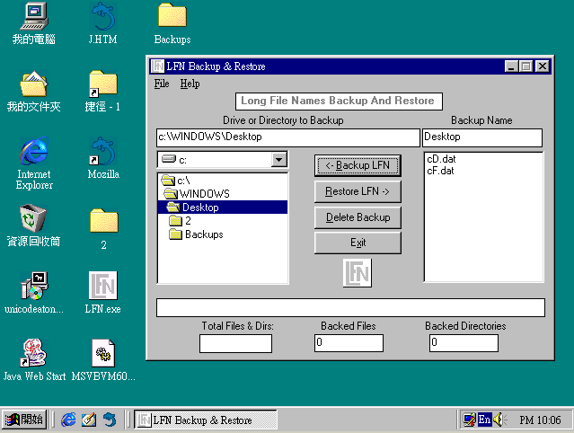

安裝完 Unicode 補完計畫 2.30 並重開機後，結果日文檔案無法開啟，出現這種錯誤訊息。
開始 -> 執行
輸入「command」，按「確定」
先輸入上方紅框內的字，備份您的新 unicode.bin。
再輸入下方紅框內的字，暫時還原您的 unicode.bin。
※請注意，這是「一行」字，不需斷行。
重新開機
※為求方便解說，我把 lfnbak305.rar 直接解到「桌面」上。
執行 lfn.exe。然後把該填的都填完，按下「<-Backup LFN」，按下「確定」後開始備份您的長檔名。
備份完成時的畫面
開始 -> 執行
輸入「command」，按「確定」
輸入畫面中的字，把之前「備份」的 unicode.bin 放回原處
重新開機
開機完畢，執行 lfn.exe 的畫面

按一下 cF.DAT，注意畫面圈起來處會自動變成您之前輸入的文字。
按下「Restore LFN ->」，按下「是」後開始依照剛才產生的「備份資料」，對您的長檔名進行「改名」。
改名完畢，把 lfn.exe 關掉
原先無法開啟的日文檔案，現在可以順利打開了